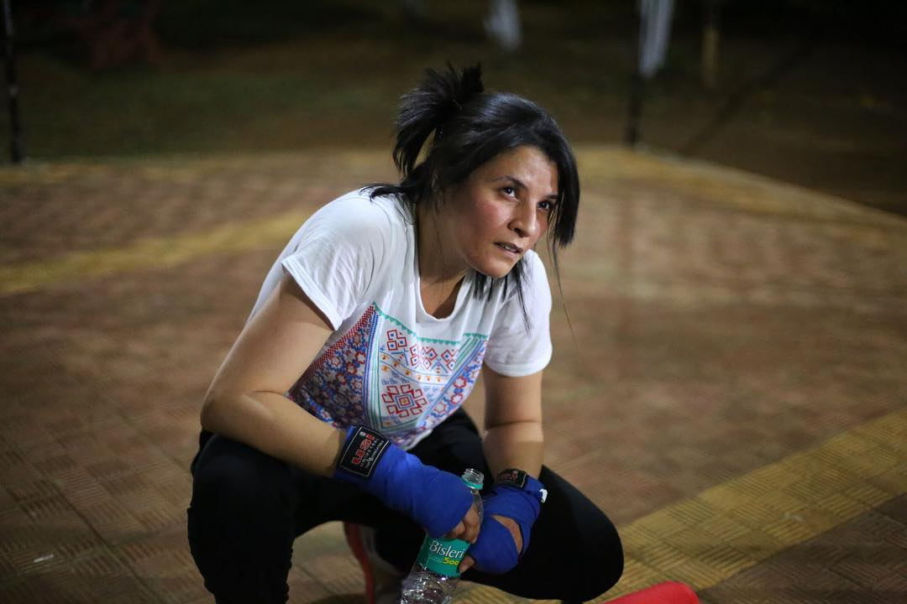

|
“I’ve been selling Kulfi at this beach for 11 hours, everyday since the past 20 years. My kulfi is evergreen -- rain, hail or sunshine, no one can refuse a Kulfi! That’s the charm of this city, but it can also make you feel homesick! My wife and children live in Pune and I can only afford to visit them twice a month. I describe the beach and twinkling skyline to them whenever I go home. I tell them of all the famous people I’ve seen and the friends I’ve made. They look in wonder, but for me, the whole world is in that room with them -- my wife and children huddled around me. By the way, I should tell you that my wife is the most beautiful woman in the world and her smile...my God! It reminds me of a perfect sunset by the beach -- warm waters, pink skies and a malai kulfi in hand!”
X
|
“I grew up in a chawl on Mohammad Ali Road. The girls who I grew up with would get married by the time they were 15 & by college they’d have their 1st child. I was 1 of the few who went on to do something ‘abnormal’ by continuing school. While neighbours used to say things like ‘what’s the point of studying! Learn cooking instead!’ or ‘if you keep working, when will you get married?’, my mom was firm about getting me educated–she wanted me to make something of myself. She wasn’t working & she didn’t want that for me. My brothers supported me too when this came up. Still, it wasn’t easy–when my mom fell ill, it was assumed that I would stay at home to look after her, while my brothers would go out to work. I’m not complaining–I would do anything for my mom, but why is it always the woman’s role? I didn’t understand it. I got a flexible job as a teacher so that I could take care of her. In college, I realised that there were women out there with real opportunities–I realised that life could be different from my reality–so I started preparing for my MBA secretly. During this time, my mom passed away, but somehow her death inspired me to push harder to change things...for myself and others. I managed to get a scholarship for my MBA– 1 year in, I founded a start-up which focused on women’s literacy. The more I worked with these girls, the more I realised that I could’ve been them–most of them had no option to study, others had to take permission from a male figure to go to a doctor & some had to give up their education to take care of their siblings. In 2017, I got a full scholarship and stipend from the University of Oxford. I got a degree in Women’s Studies & even though I got job opportunities abroad, I came home–ready to make a change. I’ve worked with daughters of sex workers & girls from low income backgrounds. We’ve tried to enable change through things like feeling comfortable wearing shorts while playing football or finding a middle ground between home & school. I’m now working on encouraging companies to invest in women. I know change won’t happen overnight, but we must try & try hard–equality IS progress for the country, something we must never forget." |
"Obviously, I’m a construction worker. I don’t wear this hat for nothing… I’m a pro at this now! But let me tell you about my first day on the job-- I thought I was fearless. But, when I had to go up to the 20th floor of the building -- the world started spinning! I got chakkars and I finally realised how hard this job actually was! Phata poster.. Par nahi nikla hero!” |
|
“I was on crowd-control duty during the 26/11 attacks – it was chaos! We’d been working long hours--managing the crowd was a little bit tricky in the aftermath. But we were trying our best – our city needed us. Still, we were exhausted. At night, I suddenly saw packets of food and water being passed through the barricade -- they were for us! It wasn’t just chips or biscuits -- the people saw that we were working for long hours without a break and cooked home food for us. There was terror all around us, but still -- the love in our hearts prevailed. I was proud to call Bombay my home that day.” |
“One is my lucky number -- I have one hand, one Haath Gaadi and one wife and son!” “What has been your biggest struggle?” “I just told you, one is my lucky number -- I have one life also, so why waste any time complaining? Just smile and be happy, my friend!” |
“My daughter is an artist -- you should see our Ganpati Pandal when she decorates it! I know she wants to become a designer, but she denies it because she knows the college fees are too expensive. I’m working two jobs -- as a painter for 6 months and a farmer for 6 months. Hopefully, I’ll be able to collect enough money, but apart from just going to a good college, I hope my efforts teach her how important money is...and how she needs to make something of herself without depending on anyone else.” |
|
“I’m only a tenth-pass. I’ve always done odd jobs. Eventually I became a watchman and I’ve been doing this for over 20 years. One thing I know is that no matter how much you study, education isn’t always enough to guarantee you a job. I’ve even seen the educated jobless. So I’ve given my kids one piece of advice that I’ll tell you also -- go to college, but also enjoy your life before you start working. Don’t give so much ‘bhaav’ to studying. Yes, It’s an investment but the future is still uncertain. So why not have a little fun?” |
“When were you the happiest?” — “There was some event happening at a big hotel nearby. And after lunch everyone wanted chai. That day I made more money than I make in a month. I took my wife and kids to McDonalds for the first time and bought the kids their own burgers with the toys in it. My kids looked at me like I was their hero! That’s the happiest day of my life.” |
“Dharavi has given life to more businesses than you can count, but it also has immeasurable unemployment. The new generation believes that they can find a better life elsewhere, but our roots are here. This is the place that gave us hope, gave us dreams...gave us life. So how do I tell them that even though there are greener pastures out there, they shouldn’t abandon the one place that was there for us when nothing else was...instead they should help it boom?” |
| 
“I began kickboxing at a young age, and it’s become a part of my life as it helps me destress. It’s a priceless skill for women today because it’s a form of self defence. When I train, the little girls in the area observe me. They’re so fascinated, that they even bring their mothers along with them! One of the girls told my coach that I was her hero and she wanted to learn kickboxing as well. That’s the day I felt like I achieved something. I empowered a little girl, and there’s nothing on earth that can compare to that feeling!” |
"What is your fondest memory?" "It’s something I didn’t actually get to physically see. I have been talking to my parents about moving abroad to study further. My father is a complete tough love kind of person and that’s how it’s always been between us. We adore each other but we don’t talk about it. Recently, my mom told me over the phone, that the other night, he said he was worried about me leaving and that if I end up going, he’s really going to miss me. I didn’t get to hear him say it or watch this happen face to face, but it doesn’t matter...it's made me feel closer to him." |

“I’ve been backpacking through Europe and South America and I just landed in Bombay a few hours ago -- it’s my first time in India!” “And what are your thoughts so far?” “’I know people bunjee jump and sky dive, but never in my entire life did I think people would be hanging out of trains so casually!” |